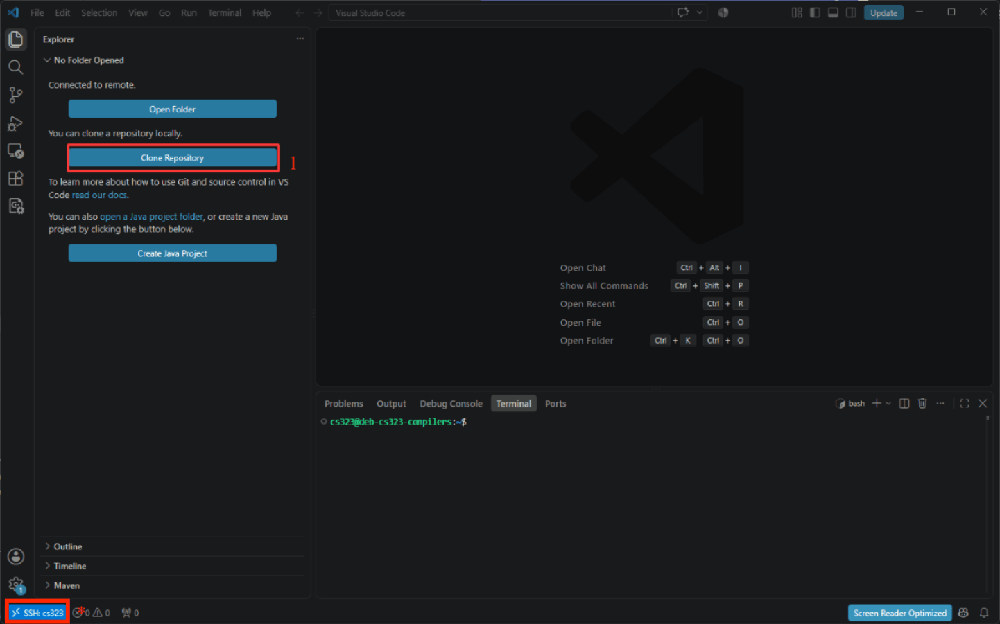
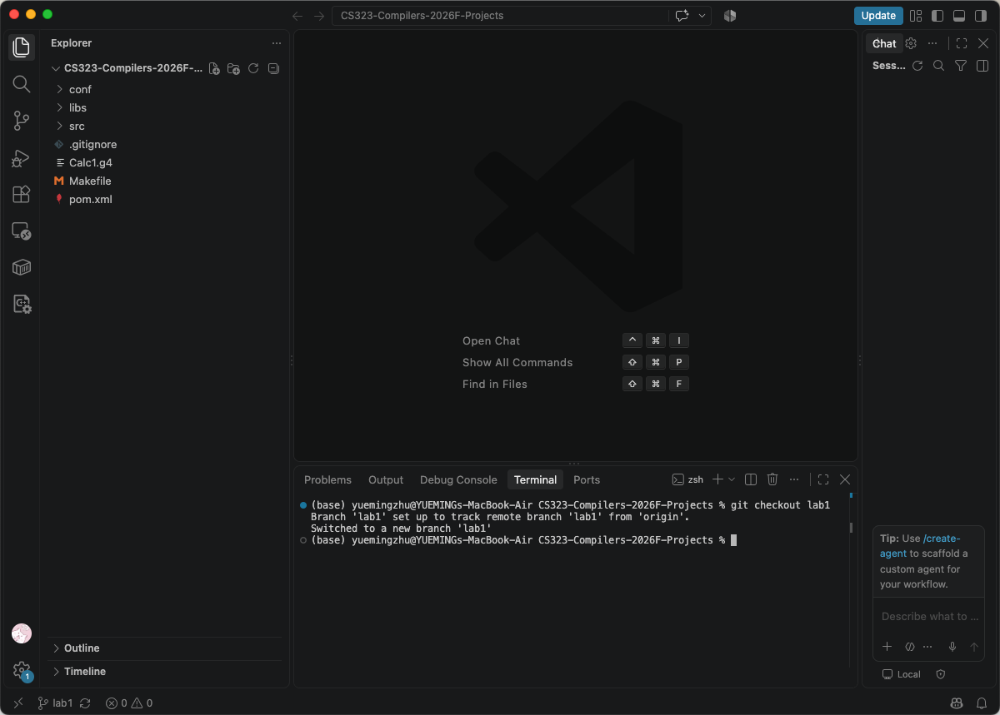
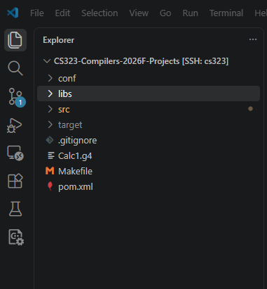
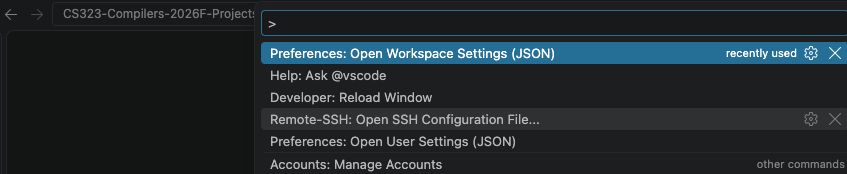
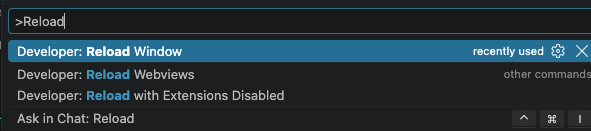
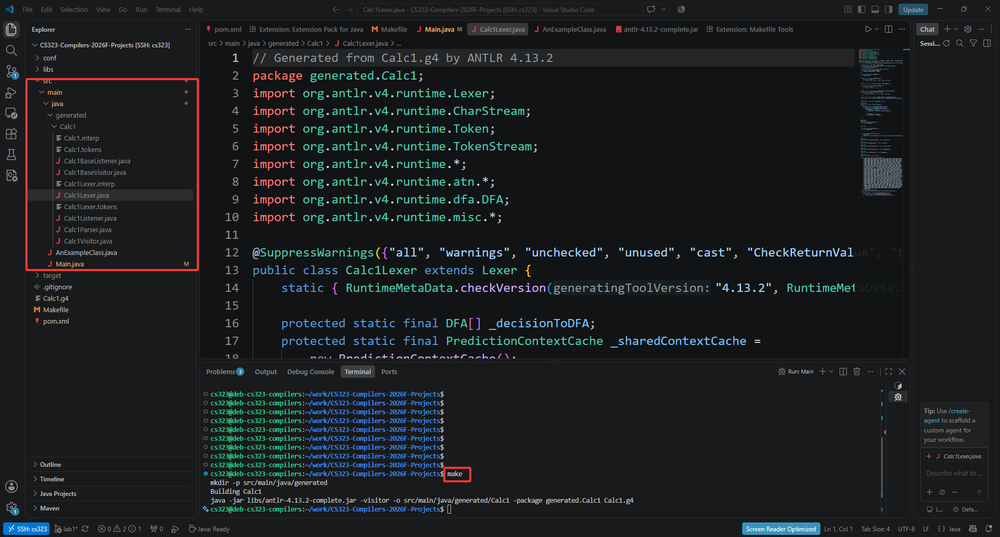
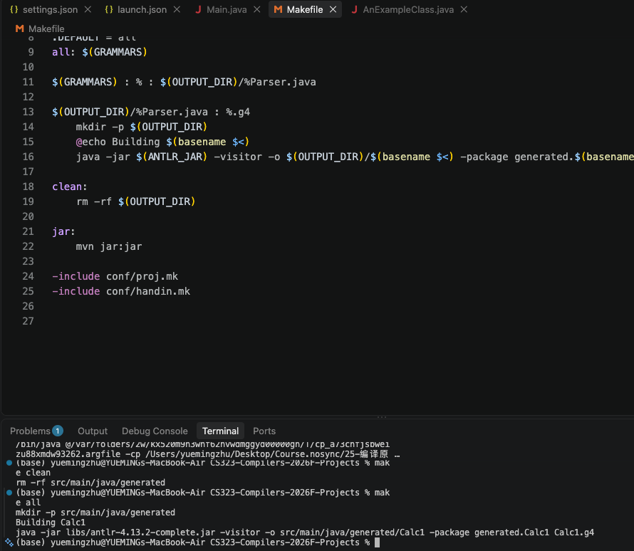

Week 1 - Introduction¶
RoadMap¶
Lab 课大致安排：
- 有多个 Projects，最终任务是写一个类C语言的编译器，我们会将这个大任务拆成多个 Projects，并提供 Hints。
- 每个 Project 之间是串联在一起的。即你在上个 Project 写的代码会在下一个 Project 中用到。
所以，请保持你代码的良好结构。 - 每个 Project 都具有相同的结构：
- 我们提供的 Framework
- 你需要自行完成的 Implementation
- 每个 Project 都将由自动评测脚本进行评测，所以千万不要改 Framework 的接口！
搭建环境¶
参考 环境配置
什么是 ANTLR¶
ChatGPT said:
ANTLR（ANother Tool for Language Recognition）是一个功能强大的 语法解析器生成工具，常用于构建编译器、解释器、DSL（领域特定语言）、代码分析工具等。它的主要作用是将 文法规则 转换成可以在目标语言（如 Java、C#, Python, JavaScript 等）中运行的 词法分析器（Lexer） 和 语法分析器（Parser）。
什么是文法规则¶
具体而言，我们可以可以把 文法规则 想象成 语言的“说明书” 或 造句的规矩。
在自然语言里，我们有语法，比如：
主语 + 谓语 + 宾语- “我 吃 苹果” ✅
同样，编程语言 或 数据格式 也有自己的规则，用来规定哪些符号组合是合法的。
抽象的来说，文法规则通常用来描述：
- 词汇层次：最小的语法单元，比如数字、单词、符号。
- 结构层次：这些词汇如何组合成更大的结构，比如“表达式”“语句”“程序”。
换句话说：
- 文法规则是一组形式化的 生产规则，规定了“从哪些符号出发，能一步步生成一个完整的合法句子”。
- 这些规则通常用 递归 方式定义，可以无限扩展。
ANTLR 配置¶
首先，按照环境配置选择并完成一种开发方式。推荐使用 VS Code 连接课程虚拟机；如果虚拟机暂时不可用，也可以先在 Windows 或 macOS 本机配置 Java 和 Make，完成前期实验。
如果使用远程开发，连接成功后 VS Code 左下角会显示类似下面的内容：
出现 SSH: cs323 即表示当前 VS Code 已经成功连接到远程虚拟机。
接下来，在 VS Code 中点击 Clone Repository，并输入课程项目仓库地址：

按照 VS Code 的提示选择仓库保存位置并完成克隆后，打开该项目目录。
接下来打开 VS Code 的终端。可以通过菜单打开，也可以直接使用快捷键：
确认终端位于所选开发环境
使用 Remote SSH 时，终端应该位于虚拟机中，并且 VS Code 左下角仍显示 SSH: cs323。
暂时使用 Windows 或 macOS 本机时，后续命令应始终在本机的项目目录中执行。
接着，在终端中输入：
该命令会将当前项目切换到本次实验使用的lab1 分支。

切换成功后，可以在 VS Code 左侧的文件浏览栏中看到类似下面的项目目录：

准备完成
如果左侧文件浏览栏已经正常显示项目目录，并且当前分支为 lab1，说明本次实验所需的代码已经准备完成。项目根目录包含 Makefile、ANTLR 的 .g4 文件、源码目录和测试用例目录；实际目录结构以当前 lab1 分支为准。
配置 VS Code 的 JAR 依赖¶
课程项目通过 libs 目录提供 ANTLR 的 JAR 包。为了让 VS Code 正确识别源码和依赖，按 Ctrl+Shift+P（Windows）或 Cmd+Shift+P（macOS）打开命令面板，然后选择 Preferences: Open Workspace Settings (JSON)。

在项目根目录的 .vscode/settings.json 中加入：
{
"java.project.sourcePaths": ["src/main/java"],
"java.project.referencedLibraries": [
"libs/**/*.jar"
],
"java.project.outputPath": "bin"
}
再在命令面板输入并执行：Debug: Add Configuration，选择 Java，生成 .vscode/launch.json，替换为以下配置：
{
"version": "0.2.0",
"configurations": [
{
"type": "java",
"name": "Launch Current File",
"request": "launch",
"mainClass": "${file}",
"classPaths": [
"libs/*",
"bin"
]
}
]
}
${file}：内置变量，自动运行 当前编辑器打开的、带 main 方法的 Java 文件 ，无需为每个文件单独配置classPaths：运行时的类路径，包含依赖 Jar 包和编译输出目录
这里可以直接创建这两个文件，在项目的根目录：

保存配置后，再次打开命令面板并执行 Developer: Reload Window。

窗口重新加载后，如果 JAVA PROJECTS 视图的 Referenced Libraries 中能够看到 libs 下的 JAR 包，说明依赖配置已经生效。
使用 Makefile 编译 ANTLR 语法文件¶
我们之前说，ANTLR 是一套 语法解析器生成工具，它可以针对某个给定的语法文件（形式语言学的上下文中，语法和文法绝大多数情况下指的是同一回事，两个术语可以互换使用），生成一些可以处理该语法的代码。
项目根目录中有一个 Calc1.g4 文件，它是一个 ANTLR 的语法文件。确认终端位于 Makefile 所在的项目根目录，然后执行：
执行后，我们可以注意到在 src/main/java 下面多了 generated.Calc1 这个包，里面有若干 .java 文件。这些代码就是 ANTLR 工具针对 Calc1.g4 这个语法生成的代码。

在本机终端中执行时，可以看到类似下面的输出：

再执行：
我们会发现 generated/ 目录被删除了。Makefile 的目标可能随实验分支变化；可以直接查看当前分支中的 Makefile，或使用 VS Code 的 Makefile Tools 扩展查看可用目标。
调用 ANTLR 生成的解析器¶
将 Main.java 覆盖为如下内容：
import generated.Calc1.Calc1Lexer;
import generated.Calc1.Calc1Parser;
import org.antlr.v4.runtime.*;
import org.antlr.v4.runtime.tree.*;
public class Main {
public static void main(String[] args) {
// 把要解析的字符串喂给 ANTLR
CharStream input = CharStreams.fromString("1 + 2");
// 词法分析器
Calc1Lexer lexer = new Calc1Lexer(input);
// Token 流
CommonTokenStream tokens = new CommonTokenStream(lexer);
// 语法分析器
Calc1Parser parser = new Calc1Parser(tokens);
// 从规则 'expression' 开始解析
ParseTree tree = parser.expr();
// 把树打印出来看看
System.out.println(tree.toStringTree(parser));
}
}
1 + 2 拆成了一棵语法树，至于第一句报错是什么意思，我们会在后续 Lexer 中讲解。
暂时看不懂树长什么样没关系，后面我们会慢慢讲到它背后的含义。